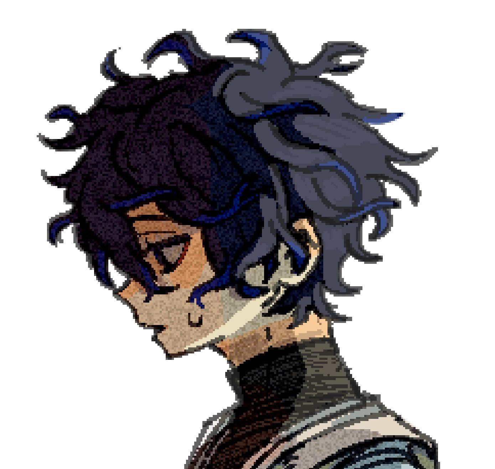
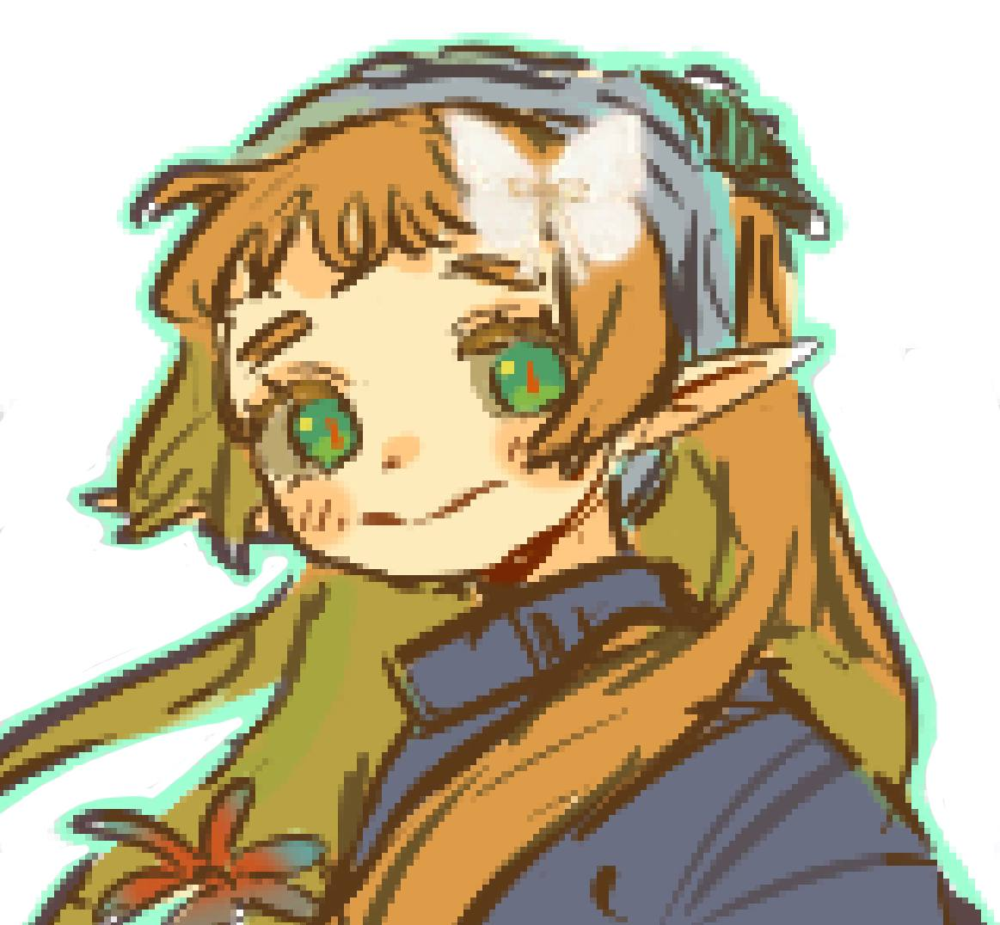
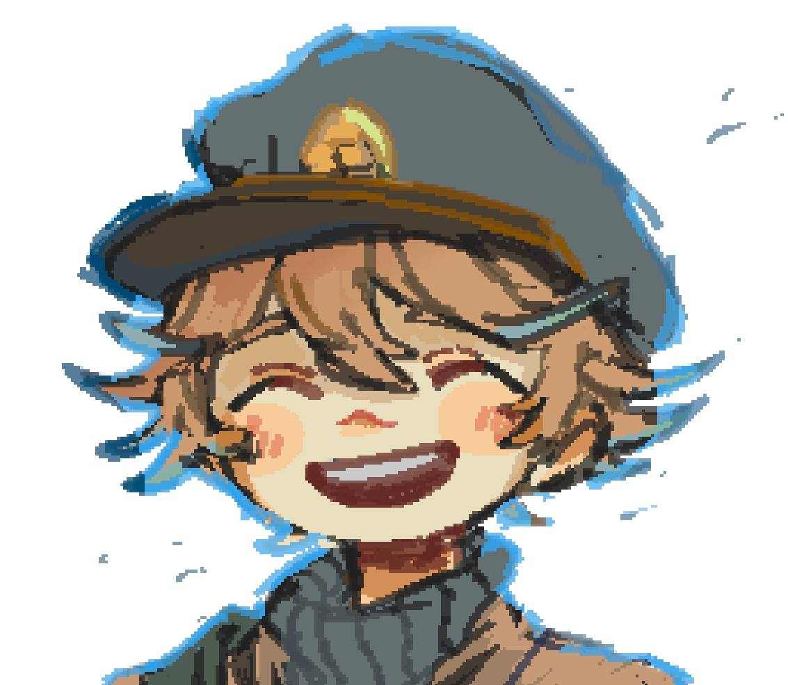

- Who's KORO
Koro is my original character and artistic identity.
She represents me and my journey as a digital artist.
You'll see her throughout this site as my personal mascot and logo.

- What's my Goals
My goal is to bring joy to people through my art and create experiences that put a smile on their faces.
I also dream of creating my own indie game featuring my original art style and characters, combining my love for art and game development into one project.
I'll paint the world in my own colors that represent my soul!- Koro
- My Original Characters (OCs)
Creating original characters is a huge part of my art.
they are part of me, and my soul
Each one has their own story, personality, and design.
-
Elias

A boy raised in a watch repair shop, where he learned that fixing broken things taught him how to fix himself. He is determination wrapped in perseverance.
Time breaks everything, yet here I am, still ticking.
- Elias -
Lily

A young dragon found lost in the woods, caged and used for her untamed powers. Rescued by Elias and Rudy, she now learns to speak, play, and find the family she never had.
no voice, no name, no sky, yet they gave me all three.
- Lily -
Rudy

A lost post man soul who remembers nothing but his name and his purpose, delivering feelings to those people love. But as a ghost, no one can see him, leaving him unable to fulfill the one thing that gives him meaning. A crybaby with a heart bigger than his fears.
My hands were made to deliver warmth, yet they pass through everything I touch.
- Rudy